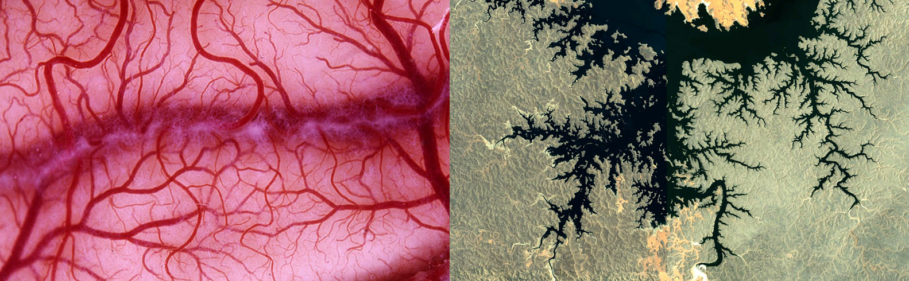
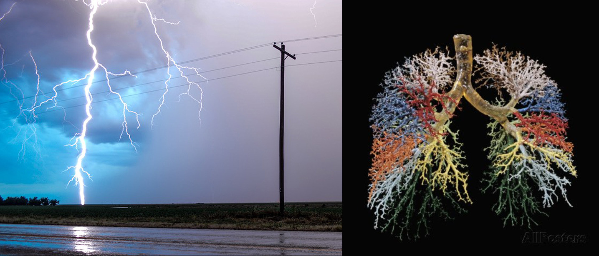
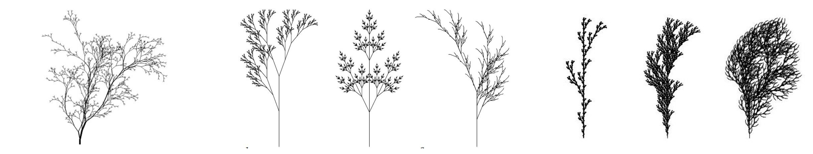
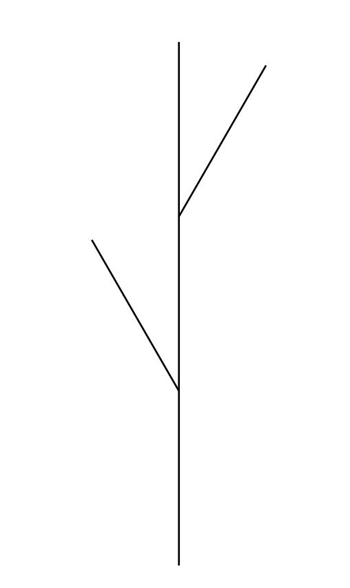
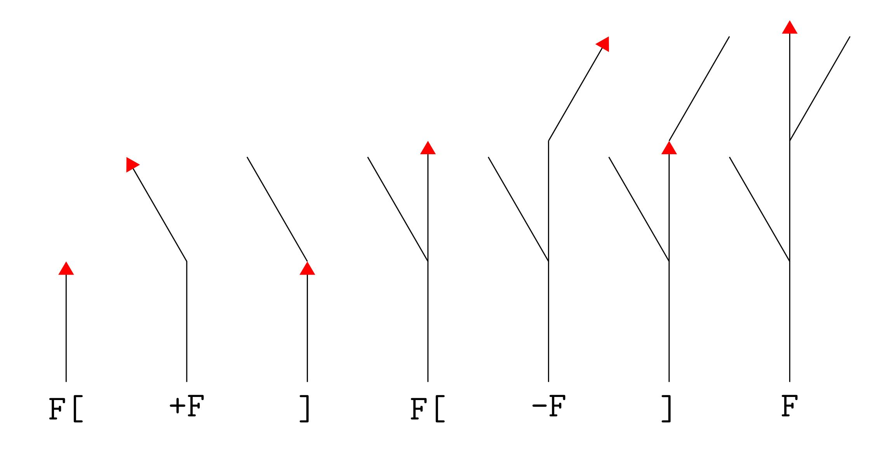
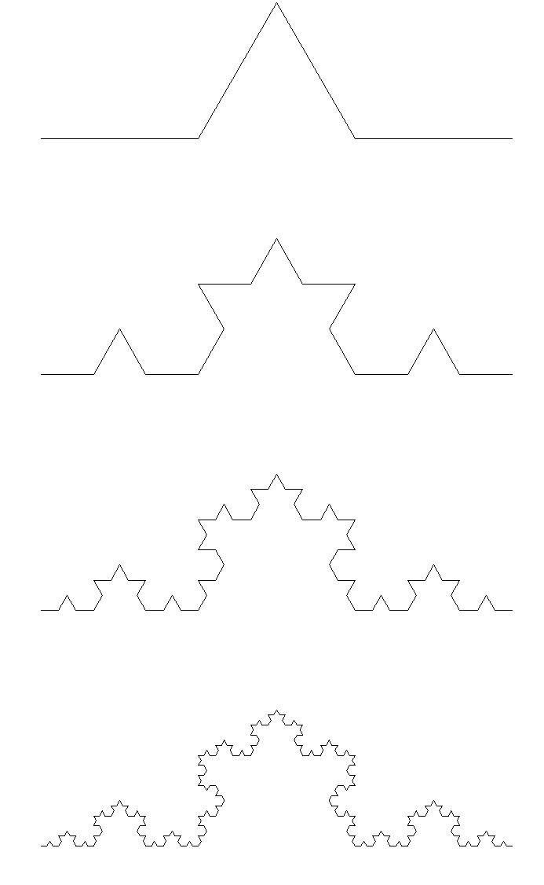

Lindenmayer Systems
Alasdair McAndrew
College of Engineering and Science
Victoria University,
Melbourne, Australia
December, 2017
What is a Lindenmayer system?
- Designed to explore organic growth
- Creates complex shapes from simple rules
- For example, with the rules: \[ \Rule{0em}{3ex}{1.3ex}\color{blue}{0\rightarrow 1},\qquad\color{red}{1\rightarrow 01} \] we have this string transformation: \[ \Rule{0em}{2.7ex}{1ex}01101=\color{blue}{0}\;\color{red}{1\;1}\;\color{blue}{0}\;\color{red}{1} \longrightarrow\color{blue}{1}\;\color{red}{01\;01}\;\color{blue}{1}\;\color{red}{01}=10101101 \]
- All operations take place simultaneously
- L-systems are term-rewriting systems
Fractals: real…

All these lovely fractal trees in the city of Melbourne, Australia, in the winter.
Fractals are everywhere
Once you start looking, you can't stop seeing them


Fractals: manufactured…

These are all examples from The Algorithmic Beauty of Plants by Aristid Lindenmayer and Przemysław Prusinkiewicz, available at http://algorithmicbotany.org/papers/abop/abop.pdf
Turning strings of symbols into pictures
- Sets of rules describe how one string of symbols will be expanded to a new string
- Each symbol corresponds to a turtle graphics instruction:
F: Move forward-: Turn left+: Turn right[: Memorize current position and heading]: Move to most recently memorized position and heading
An example
For example, this sequence of symbols:
F[+F]F[-F]F
has this output:
We can clearly alter the output by changing the angle of the turns, and the length of the move forward.
In this example, the angle is 26°

How turtle graphics works
This shows how the turtle draws a path with branches:

More on turtle graphics
It's all done from the point of view of the turtle. A side of Koch's snowflake can be computed by the rules:
- Start:
F - Modify:
F→F+F--F+F(with turns of 60°) - At every further step, each
Fis replaced by the stringF+F--F+F The second iteration produces
F+F--F+F+F+F--F+F--F+F--F+F+F+F--F+FThe third iteration produces:
F+F--F+F+F+F--F+F--F+F--F+F+F+F--F+F+F+F--F+F+F+F--F+F--F+F--F+F+F+F--F+F--F+F--F+F+F+F--F+F--F+F--F+F+F+F--F+F+F+F--F+F+F+F--F+F--F+F--F+F+F+F--F+F- and so on…
Turtle graphics with pictures!
First iteration:
Second iteration:
Third iteration:
Fourth iteration:

Some mathematics
Remember the F \(\rightarrow\) F+F--F+F iteration? How many symbols
are in the \(n\)th string?
Let \(f_n\) be the number of F's, and \(k_n\) be the number of other
symbols in the \(n\)th string. We have:
It follows immediately that \[ f_n=4^n\mbox{ and }k_n=4+4^2+4^3+\cdots+4^n=\frac{4}{3}(4^n-1). \] The total length is thus \[ f_n+k_n=4^n+\frac{4}{3}(4^n-1)=\frac{1}{3}(7(4^n)-4). \]
The fractal plant in modern languages: Racket
Racket is a modern lisp; descended from Scheme.
;; F -> F[+F]F[-F]F
(require furtle) ;; furtle is a simple but fast turtle graphics library
(: ltree_b (-> Real Real Real TurtleF)) ;; typed Racket so must declare types
(define (ltree level size angle)
(if (= level 0)
(turtles (forward size))
(turtles (ltree (- level 1) (/ size 3) angle) ; F
(save) ; [
(left angle) (ltree (- level 1) (/ size 3) angle) ; +F
(restore) ; ]
(ltree (- level 1) (/ size 3) angle) ; F
(save) ; [
(right angle) (ltree (- level 1) (/ size 3) angle) ; -F
(restore) ; ]
(ltree (- level 1) (/ size 3) angle)))) ; F
The fractal plant in modern languages: Python
import turtle as t # "turtle" is a turtle graphics module
# Lindenmayer system (a) from ABOP figure 1.24(a), p 25
def edgetree(level, size, angle):
if (level==0):
t.fd(size)
else:
edgetree(level-1, size/3, angle)
t.lt(angle)
edgetree(level-1, size/3, angle)
t.bk(size/3)
t.rt(angle)
edgetree(level-1, size/3, angle)
t.rt(angle)
edgetree(level-1, size/3, angle)
t.bk(size/3)
t.lt(angle)
edgetree(level-1, size/3, angle)
Some more mathematics
Fractal dimension can be defined by the "box-counting measure":
Suppose our picture is subdivided into boxes of size \(b\), and \(N(b)\) boxes are needed to cover the shape. Its dimension can be defined as \[ \lim_{b\to 0}\frac{\log(N(b))}{\log(1/b)}. \] For example, take a curve of length \(k\). As \(b\to 0\), we would find that \[ N(b)\to \frac{k}{b}. \] Thus \[ \lim_{b\to 0}\frac{\log(N(b))}{\log(1/b)}=\lim_{b\to 0}\frac{\log(k/b)}{\log(1/b)} =\lim_{b\to 0}1-\frac{\log(k)}{\log(b)}=1. \] In general a fractal will have a non-integer dimension between 1 and 2.
Some concluding remarks
- Lindenmayer systems provide a neat, elegant and simple way to explore fractal geometry…
- … and to explore natural shapes such as plants
- Fractals are everywhere in the world
- Their mathematics is subtle, interesting, and beautiful
- A wonderful mixture of mathematics, computing, algebra, and graphics
- Thank you all!